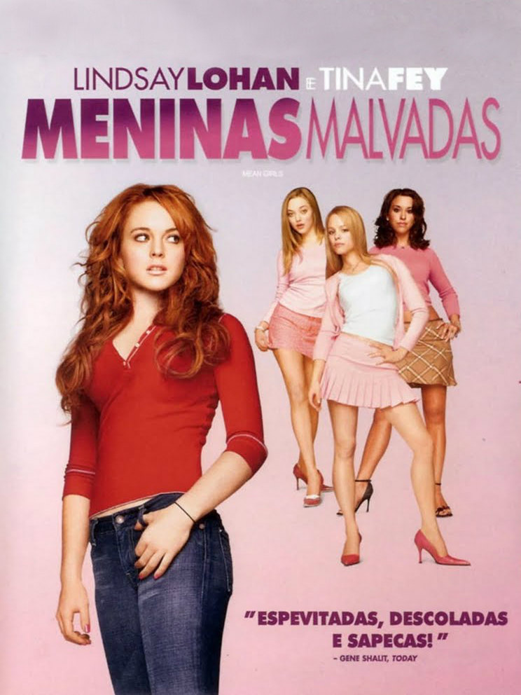

A adolescente Cady Heron foi educada na África pelos seus pais cientistas. Quando sua família se muda para o subúrbio, nos Estados Unidos, Cady começa a frequentar a escola pública e recebe uma rápida introdução às leis de popularidade que dividem seus colegas. Sem querer, ela acaba no meio de um grupo de elite de estudantes apelidadas "as poderosas".



Se você tem mais de vinte anos, é provável que pense ter visto esse filme antes. E, por um lado, tem razão. Meninas Malvadas é curioso, gostoso de se assistir. Mas seus méritos foram apresentados de forma melhor em outras comédias do gênero, porém de forma dispersa. Sua originalidade, portanto, foi tê-los agrupados num único filme – mérito único e exclusivo do roteiro escrito pela também atriz Tina Fey. E por isso mesmo é quase impossível não se deixar envolver pelos dramas vividos pelos personagens principais, apesar destes episódios serem de resoluções facilmente previsíveis.
A sinopse é bastante comum. Mocinha ingênua vai à escola pela primeira vez e logo se vê enveredada por uma selva de tipos assustadores. Se os “nerds” resolvem acolhê-la, será junto às patricinhas que terá uma chance de sentir o sabor da popularidade e, conseqüentemente, o acesso facilitado para praticar todas as perversidades que habitam o ambiente escolar. Parece assustador? Pois é, mas pode ser também engraçado. A questão está no tom assumido, que faz da protagonista dona de suas decisões, e não uma marionete sendo jogada de um lado para o outro. O exemplo, portanto, é o que fala mais alto.
O problema de Meninas Malvadas é que o filme se deixa envolver por sua própria armadilha. Lá pelas tantas, subverte-se o objeto de sátira e este é que passa a conduzir a trama, permitindo que no final os clichês mais óbvios do gênero sejam regurgitados de modo constrangedor. Durante este caminho seremos expostos à tiradas inspiradas e à piadas realmente iluminadas, mas é inevitável deixar de lamentar por elas não serem suficientes diante do tom açucarado imposto que irá corromper com a acidez tão deliciosa que até então estava sendo praticada.
Meninas Malvadas merece especial atenção, ao menos, por ter sido um respeitado sucesso de bilheteria – faturou mais de dez vezes o valor do seu orçamento – e serviu para revelar alguns talentos de peso. Se Lindsay Lohan deixou de ser uma estrela infantil e conheceu, aqui, o auge de sua popularidade artística – antes da derrocada vista através de tablóides de fofocas – entre suas antagonistas estavam Rachel McAdams (hoje uma atriz que possui no currículo trabalhos com Woody Allen e Terrence Malick) e Amanda Seyfried (estrela de musicais como Mamma Mia, 2008, e Os Miseráveis, 2012). Além disso, esta foi uma das primeiras parcerias artísticas das comediantes Fey e Amy Poehler, vistas posteriormente em outros filmes, programas de televisão e até na apresentação do Globo de Ouro.
De início, Meninas Malvadas tenta se colocar como uma daquelas comédias inteligentes e de humor corrosivo tão de encontro com o espírito politicamente incorreto que permeia o tempo em que vivemos. Mas o resultado final está mais próximo daquelas produções inconsequentes dos anos 1980 do que de exemplos realmente inovadores, como Eleição (1999) ou Três é Demais (1998). Uma obra que teve a oportunidade de se destacar, mas que preferiu oferecer mais do mesmo. Divertido, porém não memorável.
O seu endereço de e-mail não será publicado.